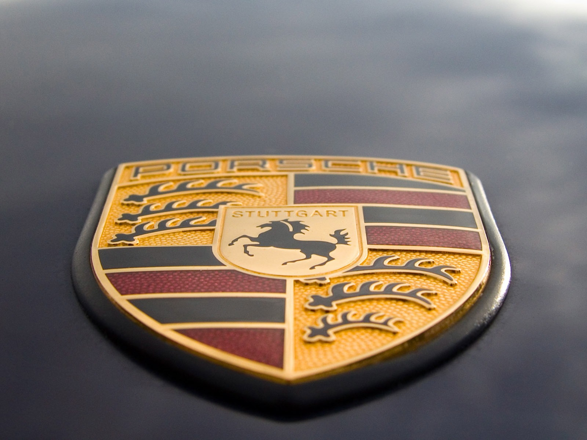

Mark Webber is a race-car driver by trade and an avid helicopter pilot in his free time. He has recently been training with the crew of Air Zermatt, who perform heroic mountain rescues—and he has reached new heights in the process. Australian race-car driver Mark Webber has reached the pinnacle of his profession, but he is developing new skills too. He is sitting on board an AS350 B3 Écureuil, an Airbus helicopter in the Air Zermatt fleet, at an altitude of around 15,000 feet. Air Zermatt pilots are among the world’s finest because they are masters in flying in extreme mountain conditions. The pilots have been rescuing skiers and hikers stranded on peaks and cliffs or caught in avalanches and crevasses. “It has definitely been one of the highlights of my life,” says Webber, who holds a private pilot’s license, in describing his experiences in the Valais Alps. Samuel Summermatter, a pilot and flight operations director at Air Zermatt, gave Webber special helicopter training in honor of his world championship racing title in November 2015. Accompanied by Summermatter and later by Robert Andenmatten, Webber completed twenty landings in the mountains. As he explains, “The landing surfaces on this type of terrain are tiny and covered with snow. The helicopter blades create little snowstorms, so you’re landing blind. Sam and Robi insisted that I always be ready to make the split-second decision to ascend again if I have any doubts about the landing conditions. The goal is to save lives, so it would be crazy to endanger the safety of the pilots, doctors, and rescue personnel on board.”

The ability to make decisions quickly in situations that would be unbearably stressful for most people is something Webber is familiar with from racing. For example, he might suddenly have to swerve to avoid hitting an obstacle while barreling down the course in Le Mans at 215 miles per hour at night. Another interdisciplinary parallel lies in the meticulous preparation needed before missions. An oversight in either field can literally be fatal. So are earthbound flights in the complex Porsche 919 Hybrid good practice for those in a helicopter? Webber briefly considers the question. “We might learn a little faster because we’re used to thinking about things like temperatures, pressures, assemblies, and aerodynamics,” he says. “But these people in the mountains fly in a completely different league.”
Read More